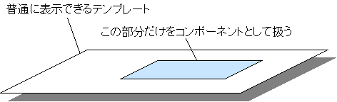
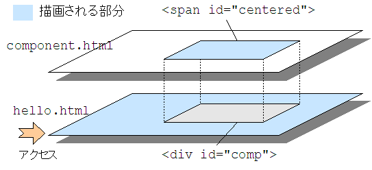
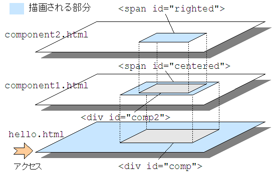

2-6. HTML 部品を使う (静的)
Maya には HTML テンプレートと maya ファイルのセットを部品として扱う機能があります。このテンプレート部品のことを「コンポーネント」と呼びます。コンポーネントを作ることで機能の共有・再利用を実現できます。
コンポーネントの作り方は簡単で、基本的には通常の HTML テンプレートを作るのと変わりません。作った HTML テンプレートのうちコンポーネントにしたい部分に id をつけ、doRender プロセッサと結びつけることでコンポーネントとして扱えるようになります。元の HTML テンプレートはそのままですから、通常の HTML テンプレートとして動作をテストすることもできます。

簡単な例
まずは簡単な例として、静的な表示のコンポーネントを作ってみましょう。
hello.html<html> <body> <h1>Hello</h1> <div id="comp">dummy</div> </body> </html>hello.maya<?xml version="1.0" encoding="ISO-8859-1"?> <m:maya xmlns:m="http://maya.seasar.org"> <m:insert id="comp" path="/component.html" rendered="true" /> </m:maya>component.html<html> <body> <h1>dummy for preview</h1> <span id="centered"> <div style="text-align: center">component value</div> </span> </body> </html>component.maya<?xml version="1.0" encoding="ISO-8859-1"?> <m:maya xmlns:m="http://maya.seasar.org"> <m:doRender id="centered" rendered="true" /> </m:maya>
関係するファイルは４つです。ユーザからリクエストされる hello.html およびその maya ファイル、それと hello.html から呼び出される component.html およびその maya ファイルです。
ブラウザで http://localhost:8080/maya/hello.html にアクセスしてみましょう。
実行結果<html> <body> <h1>Hello</h1> <div id="comp"><span id="centered"> <div style="text-align: center">component value</div> </span></div> </body> </html>
実行結果は、ベースとなる hello.html の <div id="comp"> のボディが、コンポーネントである component.html の <span id="centered"> によって置き換えられたものになっています。

このとき doRender プロセッサおよび insert プロセッサに割り当てられているタグを出力するかどうかは、それぞれの rendered の値に従います。この例では hello.html と component.html の両方とも rendered="true" ですので、hello.html のタグの内側に component.html のタグが出力されています。
ひとつのテンプレートで複数のコンポーネントを定義する
コンポーネントはひとつのテンプレートで複数定義できます。定義したコンポーネントを区別するには、それぞれのコンポーネントに名前を付け、呼び出すときにその名前を指定します。
名前を付けない場合、空文字列 ("") が名前として使われます。また、同一テンプレート上の複数のコンポーネントに同じ名前を付けることはできません。
hello.html<html> <body> <h1>Hello</h1> <div id="comp1">dummy</div> <div id="comp2">dummy</div> </body> </html>hello.maya<?xml version="1.0" encoding="ISO-8859-1"?> <m:maya xmlns:m="http://maya.seasar.org"> <m:insert id="comp1" path="/component.html" name="center1" rendered="true" /> <m:insert id="comp2" path="/component.html" name="center2" rendered="true" /> </m:maya>component.html<html> <body> <h1>dummy for preview</h1> <span id="centered1"> <div style="text-align: center">component value 1</div> </span> <span id="centered2"> <div style="text-align: center">component value 2</div> </span> </body> </html>component.maya<?xml version="1.0" encoding="ISO-8859-1"?> <m:maya xmlns:m="http://maya.seasar.org"> <m:doRender id="centered1" name="center1" rendered="true" /> <m:doRender id="centered2" name="center2" rendered="true" /> </m:maya>実行結果<html> <body> <h1>Hello</h1> <div id="comp1"><span id="centered1"> <div style="text-align: center">component value 1</div> </span></div> <div id="comp2"><span id="centered2"> <div style="text-align: center">component value 2</div> </span></div> </body> </html>
コンポーネントでコンポーネントを使う
コンポーネントは通常のテンプレート同様、他のコンポーネントを利用できます。利用方法も同様です。
次の例は hello.html が component1.html のコンポーネントを利用し、component1.html のコンポーネントが component2.html のコンポーネントを利用しています。
hello.html<html> <body> <h1>Hello</h1> <div id="comp">dummy</div> </body> </html>hello.maya<?xml version="1.0" encoding="ISO-8859-1"?> <m:maya xmlns:m="http://maya.seasar.org"> <m:insert id="comp" path="/component1.html" rendered="true" /> </m:maya>component1.html<html> <body> <h1>dummy for preview</h1> <span id="centered"> <div style="text-align: center">component value 1</div> <div id="comp2">dummy</div> </span> </body> </html>component1.maya<?xml version="1.0" encoding="ISO-8859-1"?> <m:maya xmlns:m="http://maya.seasar.org"> <m:doRender id="centered" rendered="true" /> <m:insert id="comp2" path="/component2.html" rendered="true" /> </m:maya>component2.html<html> <body> <h1>dummy for preview</h1> <span id="righted"> <div style="text-align: right">component value 2</div> </span> </body> </html>component2.maya<?xml version="1.0" encoding="ISO-8859-1"?> <m:maya xmlns:m="http://maya.seasar.org"> <m:doRender id="righted" rendered="true" /> </m:maya>実行結果<html> <body> <h1>Hello</h1> <div id="comp"><span id="centered"> <span style="text-align: center">component value 1</span> <div id="comp2"><span id="righted"> <div style="text-align: right">component value 2</div> </span></div> </span></div> </body> </html>
